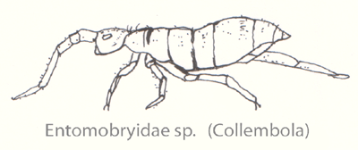
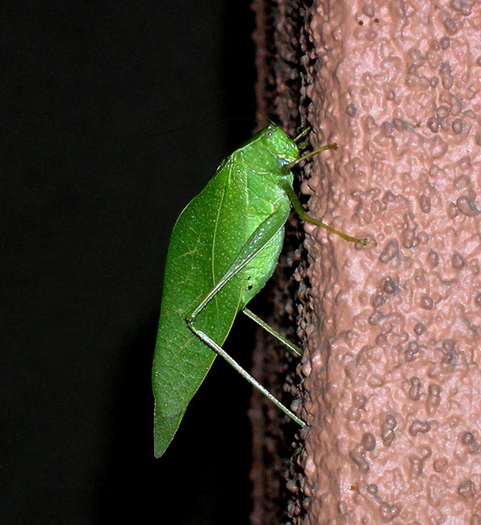

Materials:
Yellow Bowl (school property)
I meter of string
One cup of water + couple drops of dish detergent + 2
teaspoons of salt (at home)
Container or sandwich bags (home)
In class:
Brainstorm where to place the bowl.
|
Take Home Activity:
Saturday before Sunset:
1.
Fill the bowl with one cup
of water, a couple of drops of dish detergent, and 2 teaspoons of salt.
2.
Place the bowl anywhere
outside your home on Saturday night.
3.
With the help of another
person, measure how many plants and plant species are within a string-length of
the bowl (3.14 m2). Your helper should hold one end of the string at
the bowl and you hold the other end. Holding the string taut, walk in a circle
around the bowl and count the number of individual plants and different plant
species the string pass over. Create a data table and record these data in
your journal.
4.
Leave the bowl outside
until late Sunday or early Monday morning.
5.
Pour the water, salt, and
insects into a plastic container or doubled sandwich bags that you can
seal. Bring the container/ sandwich bags
and the yellow bowl, your journal, and string to class on Monday.
6.
How many total plants are
there?
7.
How many different kinds of
plants (species) are there?
In Class:
1.
Pour a small amount of
liquid from your container or sandwich bags back into the yellow container.
2.
Using a magnifying glass
and a needle sort the arthropods by abundance and species. Empty the bowl into
the waste beaker and refill the yellow bowl with more of your sample and repeat
until all arthropods are counted and sorted.
3. Class data collection, how should the data be collected in Excel?
4. Calculations:
Density calculation (5points)5.
Decide how to represent your
findings in a spreadsheet and graph with best fit (trend line) and R2
value. (Suggestions: # plant species vs.
# arthropods species, # plant species vs. total # arthropods). Write-up:
full title (IV/DV information), graphs (min. 2, titles, axes
labeled with units, equations, etc), and short findings
paragraph "power conclusion", and citations (APA: www.bibme.org)
Common arthropods:
|
Common Name |
Order |
Description |
|
Spiders |
Araneae |
Eight legs, no wings |
|
Beetles |
Coleoptera |
Hard elytra (wing cases) |
|
Springtails |
Collembola |
Minute & wingless |
|
Earwigs |
Dermaptera |
“pincer-like” cerci (rear paired appendages) |
|
Flies, gnats, mosquitoes |
Diptera |
Only 2 wings |
|
Leafhoppers, planthoppers |
Hemiptera |
Wings half hard, half membranous |
|
Aphids |
Homoptera |
Small with cornicle (or
siphuncule) is one of a pair of small upright backward-pointing tubes found
on the dorsal side of the last segment of the bodies of aphids |
|
Wasps (many small parasitoids), bees, ants |
Hymenoptera |
Usually has a constricted “waist” |
|
Moths, butterflies |
Lepidoptera |
Scale-coverd wings |
|
Lacewings |
Neuroptera |
Clear, vein filled wings |
|
Harvestmen |
Opiliones |
Like spiders, often called “daddy longlegs” |
|
Crickets, grasshoppers, katydids |
Orthroptera |
Long hind legs for jumping |
All Images from Wikimedia Commons:

Springtail: http://commons.wikimedia.org/wiki/File:Collembola-entomobryidae-sp.gif
Earwigs http://upload.wikimedia.org/wikipedia/commons/8/87/Earwig_wing2.jpg
Planthopper http://upload.wikimedia.org/wikipedia/commons/1/1d/Planthopper-Flatidae.jpg
Lacewing: http://upload.wikimedia.org/wikipedia/commons/4/42/Green_lacewing.jpg
Harvestmen: (daddy long legs) http://upload.wikimedia.org/wikipedia/commons/f/fc/Harvestmen_Close_Macro.jpg

Katydid: http://upload.wikimedia.org/wikipedia/commons/2/2e/Katydid_92688.jpg
Additional References:
Berkeley, Candice. "Constructing Berlese Funnels to Study Invertebrate Density and Biodiversity,"Carolina Biological. http://www.carolina.com/category/teacher+resources/classroom+activities/constructing+berlese+funnels.do
{kind=link}
{kind=link}
{kind=link}
{kind=link}
{kind=link}
{kind=link}
{kind=link}